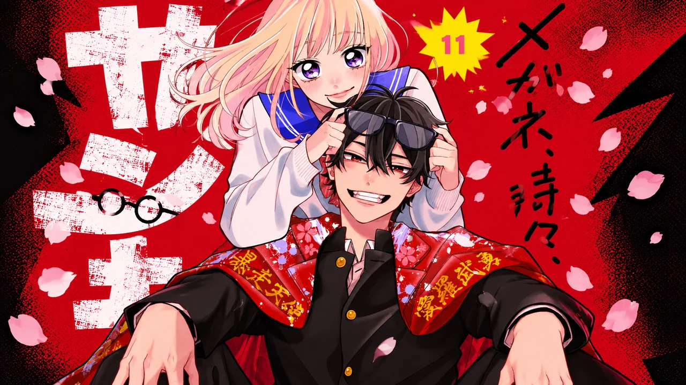
Trailer
Megane, Tokidoki, Yankee-kun ganha 1º trailer e confirma estreia!
O site oficial da adaptação em anime liberou o 1º trailer da obra. O vídeo traz detalhes da história e dos personagens.
NO RADAR
O que acontece no seu universo favorito.
Anime, mangá e cultura japonesa.
As novidades se encontram aqui.

O site oficial da adaptação em anime liberou o 1º trailer da obra. O vídeo traz detalhes da história e dos personagens.
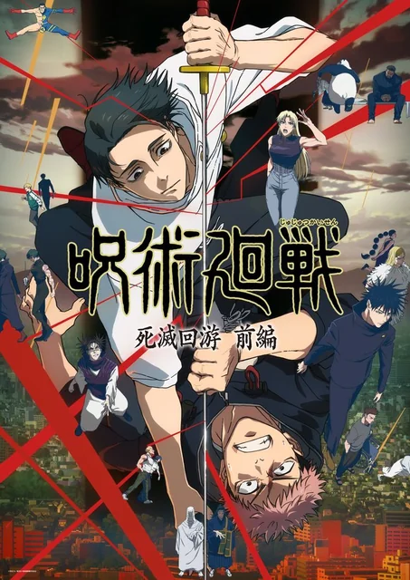
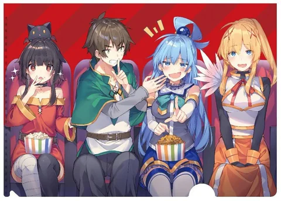
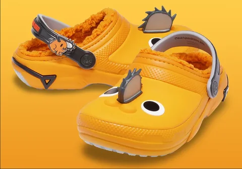
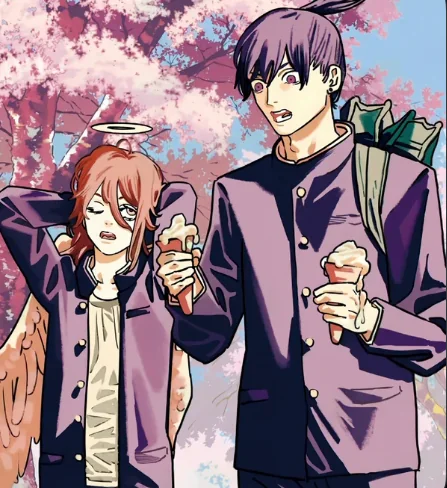
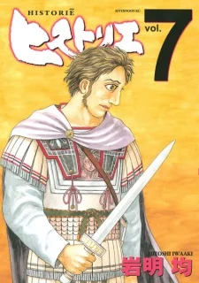
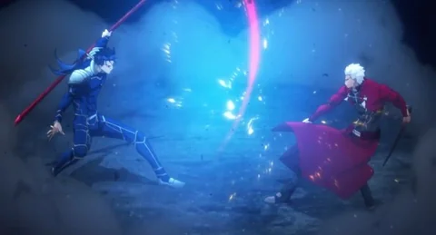
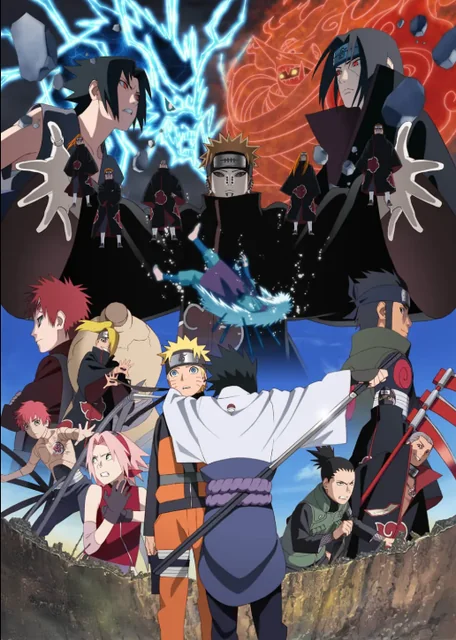
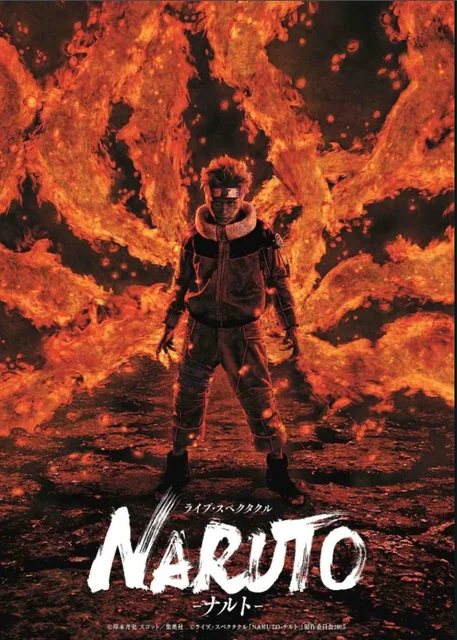
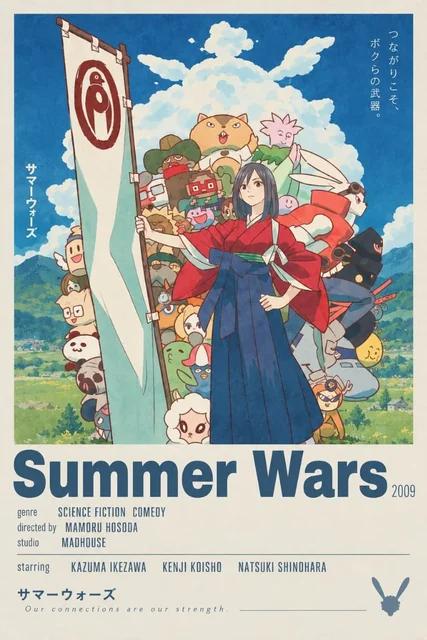
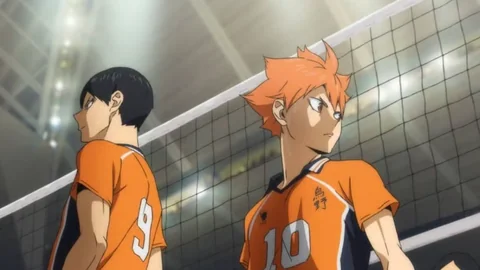
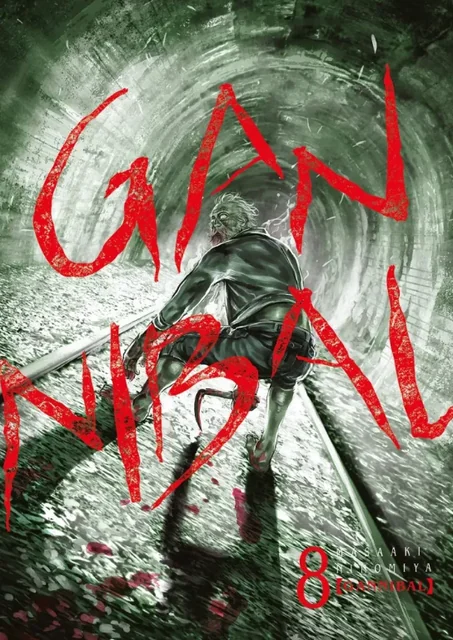
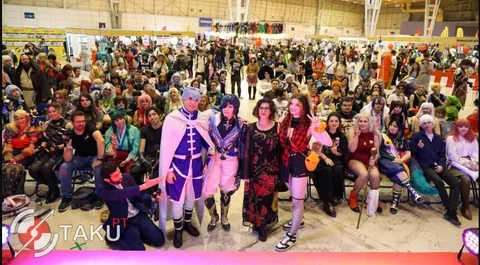
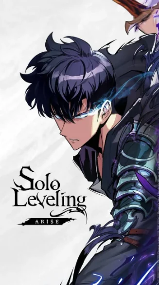
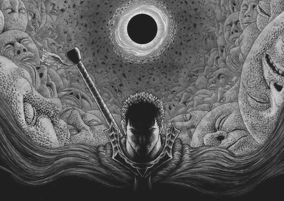
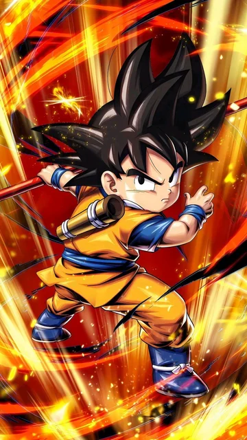
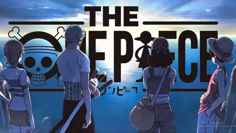
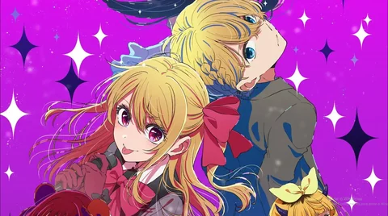
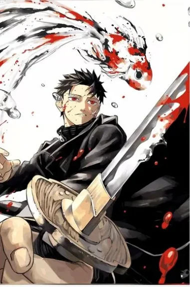
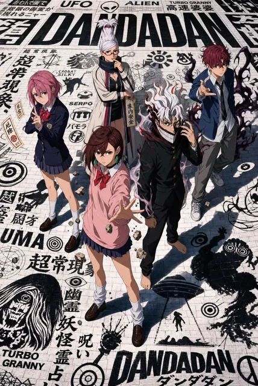
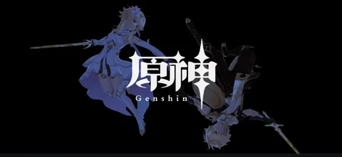
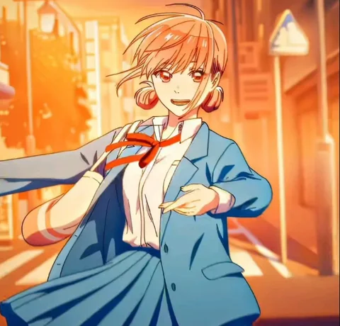
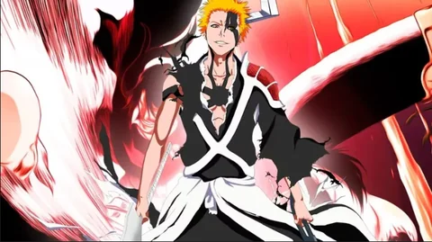
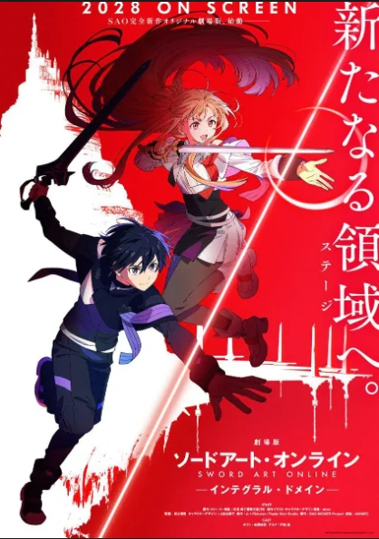
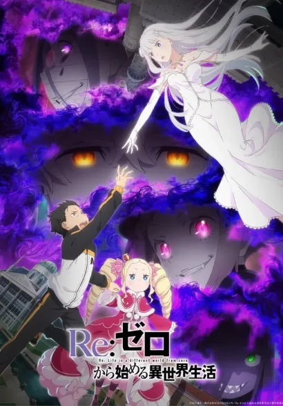
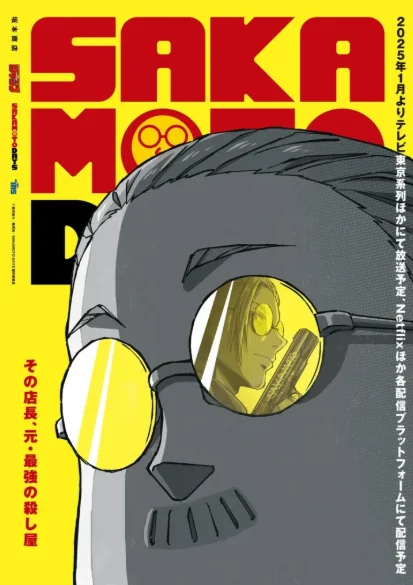
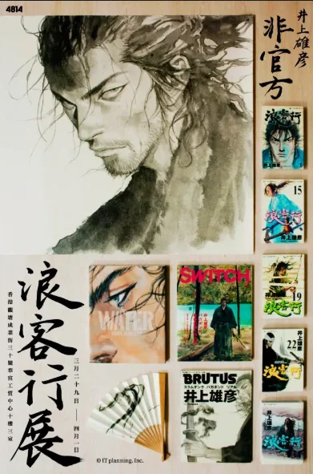